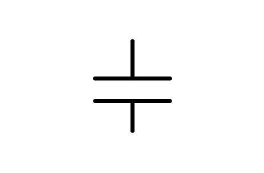

11. El: Index: Capacitor¶
A capacitor is a component that can store electricity just like a rechargeable battery does, but with two differences. The stored energy is much lower than that of a battery and the loading and download cycles that support a capacitor are many billions, while a rechargeable battery only supports few hundred cycles.
The symbol of a capacitor is as follows:
{kind=link}

Capacitor symbol.¶
The practical applications of the capacitor are very varied:
- Keep the output voltage of a power supply constant.
- Measure times thanks to its loading and download time.
- Sound signal filtering in equalizers.
Power filter¶
The voltage transformers used in feeding sources always provide alternate voltage to their output. When we want to transform this alternate voltage in continuous voltage it is necessary to add a rectifier (a diode, a component that we will study in detail later) and it is also necessary to add a capacitor to soften the output voltage.
In the following circuit we can see two translators with their input tensions and their output tensions already rectified. The first transformer shows positive tension peaks that are not softened by not having a capacitor. The second transformer also has a capacitor that "softens " tension peaks, so the output voltage barely shows variations.
The capacitor function is to store electricity during positive transformer voltage peaks and supply electricity during the times when the transformer does not, thus maintaining the constant output voltage.
Oscillator with capacitor¶
In this timer circuit, the capacitor takes a while to charge and discharge from electricity through resistance. That loading and download time is the one that determines the oscillation time of an electronic door. These oscillators have many practical applications in all types of digital circuits.
On the left you can see an oscilloscope with the capacitor tension. As soon as the tension rises to 3.33 volts, the exit changes to voltage of 0 volts, forcing the capacitor to download. As soon as the low capacitor voltage of 1.66 volts, the exit changes to positive voltage of 5 volts, forcing the capacitor to load.
Exercises¶
- What is a capacitor? What does it look like and how differs from a rechargeable battery?
- Write three practical applications of the capacitor.
- Draw a circuit with a capacitor that softens the output voltage peaks of a transformer.
- What function does a feed filter capacitor have?
- Draw a circuit with an oscillator capacitor.
- Change the capacitor value so that the oscillation is five times faster. What is your value now?
- Change the capacitor value so that the oscillation is twice slower. What is your value now?